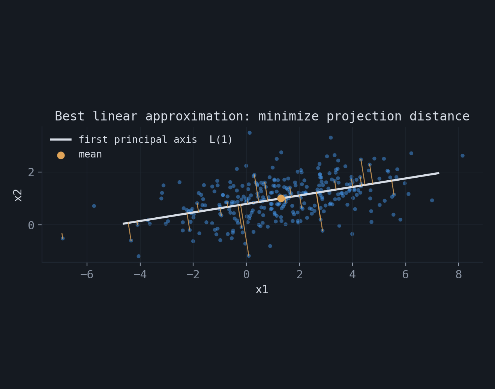
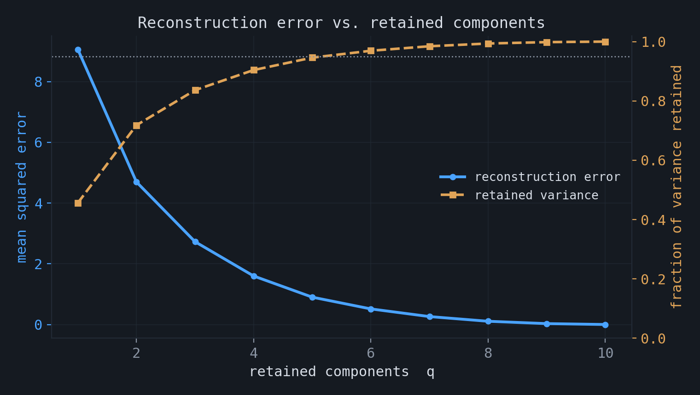
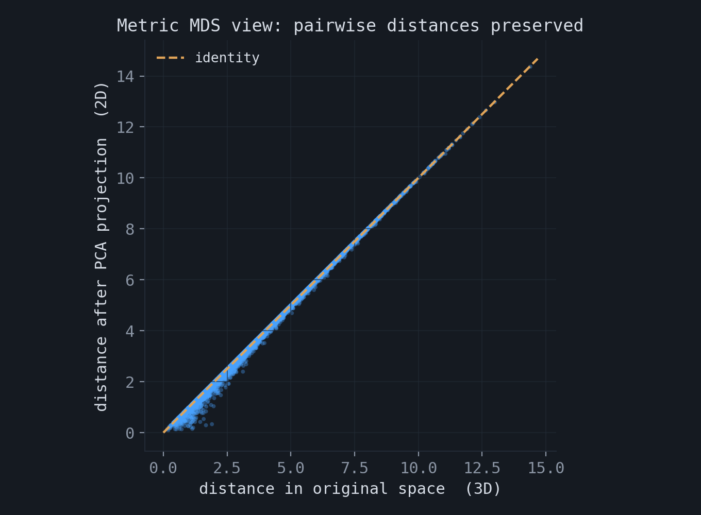
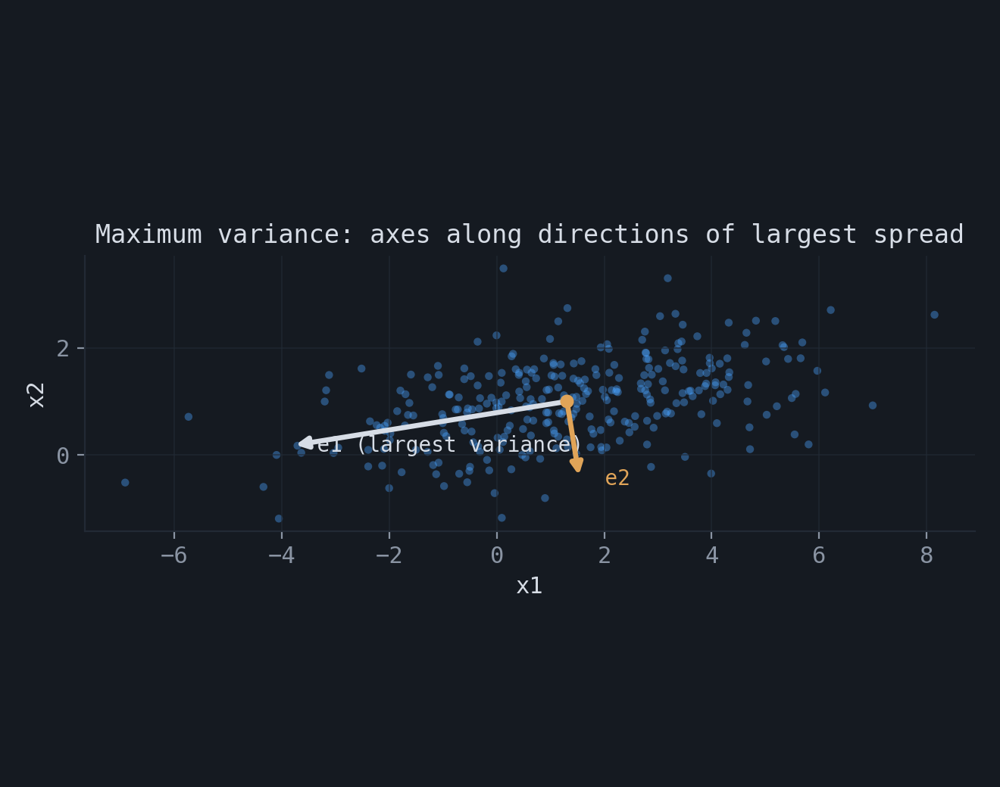
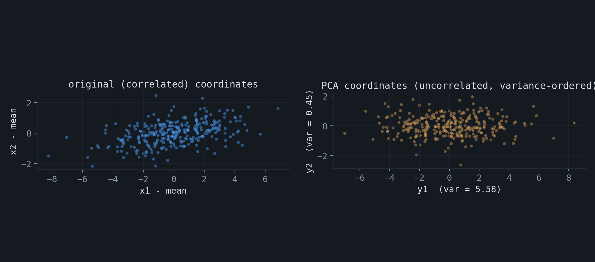
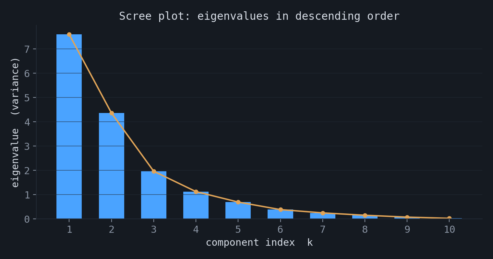

The many sides of PCA
Principal component analysis (PCA), introduced by Pearson in 1901 and further developed by Hotelling, is among the oldest and most widely used methods for dimensionality reduction and exploratory data analysis. It is commonly employed as a preprocessing step in multivariate analysis, pattern recognition, image processing, and many other areas, and it forms the basis of numerous linear and nonlinear techniques. Closely related formulations appear across disciplines under different names, including the Karhunen–Loève transform in signal processing, the Hotelling transform in statistics, proper orthogonal decomposition in mechanical engineering, and the singular value decomposition in linear algebra.
Given a dataset of $n$ points in $\mathbb{R}^p$, PCA produces a linear map to a lower-dimensional space $\mathbb{R}^q$ with $q < p$. The map is defined by a $q \times p$ matrix $W$ applied to the centered data, $y_i = W(X_i - \bar X)$, and the new coordinates are called principal components. What makes PCA worth studying is that the same construction arises from several different criteria. This post states five of them and shows that they lead to the same matrix.
This post is inspired by the Geometrical Methods of Machine Learning course held at Skoltech by Alexander Bernstein.
1.Setup and notation
Let $\{X_1, \dots, X_n\}$ be the data, with each $X_i \in \mathbb{R}^p$. The mean vector and centered observations are
$$ \bar X = \frac{1}{n}\sum_{i=1}^{n} X_i, \qquad \bar X_i = X_i - \bar X. $$Collect the centered observations as the columns of the $p \times n$ matrix $\bar{\mathbf X} = (\bar X_1, \dots, \bar X_n)$. The sample covariance matrix is
$$ \Sigma = \frac{1}{n}\sum_{i=1}^{n}(X_i - \bar X)(X_i - \bar X)^\top = \frac{1}{n}\,\bar{\mathbf X}\,\bar{\mathbf X}^\top. $$This $p \times p$ matrix is symmetric and positive semidefinite. By the spectral theorem it admits an orthonormal eigenbasis $e_1, \dots, e_p$ with real eigenvalues, which we order as $\lambda_1 \ge \lambda_2 \ge \dots \ge \lambda_p \ge 0$, so that $\Sigma e_k = \lambda_k e_k$. These eigenvectors are the principal axes. Each viewpoint below arrives at the same conclusion: the optimal directions are the leading eigenvectors of $\Sigma$.
2.Best linear approximation
The first viewpoint asks for the $q$-dimensional affine subspace that lies closest to the data in mean squared distance. Parameterize such a subspace as
$$ L(q) = \Big\{ X_0 + \sum_{k=1}^{q} t_k e_k : t \in \mathbb{R}^q \Big\}, \qquad E = (e_1, \dots, e_q), \quad E^\top E = I_q, $$a plane through a point $X_0$ spanned by orthonormal vectors. The orthogonal projection of a point $X$ onto $L(q)$ is $\mathrm{Pr}_{L(q)}(X) = X_0 + \sum_{k=1}^{q}\langle X - X_0, e_k\rangle\, e_k$, and the objective is the mean squared distance to that projection,
$$ J(L(q)) = \frac{1}{n}\sum_{i=1}^{n}\big\| X_i - \mathrm{Pr}_{L(q)}(X_i)\big\|^2. $$Taking $X_0 = \bar X$ is optimal, because for any choice of $E$ the residual splits by the Pythagorean theorem into a part along the data spread and a part orthogonal to the subspace,
$$ \big\| X_i - \mathrm{Pr}_{L(q)}(X_i)\big\|^2 = \big\| X_i - \bar X \big\|^2 - \sum_{k=1}^{q}\langle X_i - \bar X, e_k\rangle^2. $$The first term does not depend on $E$, so minimizing $J$ is equivalent to maximizing the second sum. Writing $\langle X_i - \bar X, e_k\rangle^2 = e_k^\top (X_i - \bar X)(X_i - \bar X)^\top e_k$ and averaging over $i$,
$$ \Phi(E) = \frac{1}{n}\sum_{i=1}^{n}\sum_{k=1}^{q}\langle X_i - \bar X, e_k\rangle^2 = \sum_{k=1}^{q} e_k^\top \Sigma\, e_k = \mathrm{Tr}(E^\top \Sigma E). $$The problem is therefore to maximize $\mathrm{Tr}(E^\top \Sigma E)$ subject to $E^\top E = I_q$.
The constrained maximum can be derived directly with Lagrange multipliers. For the first direction, maximizing $e_1^\top \Sigma e_1$ subject to $e_1^\top e_1 = 1$ gives the stationarity condition
$$ \nabla_{e_1}\Big[e_1^\top \Sigma e_1 + \lambda(1 - e_1^\top e_1)\Big] = 2\Sigma e_1 - 2\lambda e_1 = 0 \;\;\Longrightarrow\;\; \Sigma e_1 = \lambda e_1. $$So $e_1$ is an eigenvector, and since $e_1^\top \Sigma e_1 = \lambda$, the maximum is the largest eigenvalue $\lambda_1$. For the second direction one adds the orthogonality constraint $e_2^\top e_1 = 0$; the multiplier on that constraint turns out to be zero, the condition again reduces to $\Sigma e_2 = \lambda e_2$, and the maximum over directions orthogonal to $e_1$ is $\lambda_2$. Continuing in this way yields $e_3, \dots, e_q$. The figure shows the case $q = 1$: the line through the mean that minimizes the squared orthogonal distances. This is not the regression line, which minimizes vertical distances.

3.Best linear dimensionality reduction
The second viewpoint asks for a linear map and a linear reconstruction that together minimize the recovery error. An embedding $y_i = W(X_i - \bar X)$ with a $q \times p$ matrix $W$ satisfying $WW^\top = I_q$ is paired with a reconstruction $\hat X_i = \bar X + V y_i$ using a $p \times q$ matrix $V$. For a fixed $W$, minimizing the squared error over $V$ gives the Moore–Penrose solution $V = W^\top$, so the reconstruction is the orthogonal projection
$$ \hat X_i = \bar X + W^\top W (X_i - \bar X) = \bar X + P\,(X_i - \bar X), \qquad P = W^\top W, $$where $P$ is the projection matrix onto the row space of $W$, satisfying $P^\top = P$ and $P^2 = P$. Applying the Pythagorean theorem to $X_i - \hat X_i = (I - P)(X_i - \bar X)$ and using $\mathrm{Tr}(AA^\top) = \mathrm{Tr}(A^\top A)$,
$$ \varepsilon^2(W) = \frac{1}{n}\sum_{i=1}^{n}\big\| X_i - \hat X_i \big\|^2 = \frac{1}{n}\sum_{i=1}^{n}\| X_i - \bar X\|^2 - \mathrm{Tr}(W \Sigma W^\top). $$The first term is fixed, so minimizing the error is the same as maximizing $\mathrm{Tr}(W \Sigma W^\top)$. With $E = W^\top$ this is exactly the problem of the previous section, and the optimal map is again the matrix of leading eigenvectors, $W_{\text{PCA}} = E_{\text{PCA}}^\top$. The reconstruction error from keeping $q$ components equals the sum of the discarded eigenvalues,
$$ \varepsilon^2(W_{\text{PCA}}) = \sum_{k=q+1}^{p}\lambda_k, $$and the fraction of variance retained is $\big(\sum_{k\le q}\lambda_k\big)\big/\big(\sum_{k}\lambda_k\big)$.

4.Metric multidimensional scaling
The third viewpoint asks for low-dimensional coordinates that preserve the pairwise Euclidean distances of the data. Let $\mathbf{D}_X$ and $\mathbf{D}_Y$ be the $n \times n$ matrices of squared distances in the original and reduced spaces. The objective is to preserve the averaged pairwise distances,
$$ \mathrm{APD}(W) = \sum_{i,j=1}^{n}\Big(\| X_i - X_j\|^2 - \| y_i - y_j\|^2\Big)^2 = \big\|\mathbf{D}_X - \mathbf{D}_Y\big\|_F^2. $$Squared distances and centered inner products are related by $\| X_i - X_j\|^2 = S_{ii} + S_{jj} - 2 S_{ij}$, where $S_{ij} = \langle X_i - \bar X, X_j - \bar X\rangle$. Double-centering with $H = I_n - \tfrac{1}{n}\mathbf{1}\mathbf{1}^\top$ removes the $S_{ii}$ and $S_{jj}$ terms, giving $\mathbf{S}_X = -\tfrac{1}{2}H\mathbf{D}_X H$ and likewise for $Y$. The distance problem therefore reduces to matching the Gram matrices,
$$ \big\|\mathbf{S}_X - \mathbf{S}_Y\big\|_F^2 = \big\| \bar{\mathbf X}^\top \bar{\mathbf X} - Y^\top Y \big\|_F^2 \;\to\; \min. $$The minimizer is the best rank-$q$ approximation of the Gram matrix $\bar{\mathbf X}^\top \bar{\mathbf X}$, given by its leading eigenvectors. Writing the singular value decomposition $\bar{\mathbf X} = U_p \Lambda_p V_p^\top$, the $n \times n$ Gram matrix is $\bar{\mathbf X}^\top \bar{\mathbf X} = V_p \Lambda_p^2 V_p^\top$, and its best rank-$q$ approximation uses the first $q$ columns of $V_p$. The resulting reduced coordinates coincide with the PCA features, so $W_{\text{MDS}} = W_{\text{PCA}}$. The figure compares pairwise distances before and after a two-dimensional projection of three-dimensional data; they lie close to the identity line.

5.Maximum variance and decorrelation
The fourth viewpoint treats $X$ as a random vector with covariance $\Sigma$ and looks for the direction of maximum variance. For a unit vector $e$, the projected variable $Y_e = e^\top X$ has variance
$$ \mathrm{Var}(Y_e) = e^\top \Sigma\, e. $$Expanding $e = \sum_k a_k e_k$ in the eigenbasis, with $\sum_k a_k^2 = 1$, gives $\mathrm{Var}(Y_e) = \sum_k a_k^2 \lambda_k$, a convex combination of the eigenvalues. It is maximized by placing all weight on the largest, that is $e = e_1$, with maximal variance $\lambda_1$. The $k$-th direction is sought orthogonal to the previous ones and recovers $e_k$ with variance $\lambda_k$. For zero-mean Gaussian data this criterion is equivalent to maximizing the mutual information between $X$ and its projection $Y = WX$, since for a deterministic linear map $I(X, Y) = H(Y)$ and the Gaussian entropy $H(Y) = \tfrac{1}{2}\log\big((2\pi e)^q \det(W\Sigma W^\top)\big)$ is maximized by the leading eigenvectors.
The resulting coordinates have a further property: they are uncorrelated. The covariance matrix of the projected data is $E_{\text{PCA}}^\top \Sigma\, E_{\text{PCA}} = \mathrm{diag}(\lambda_1, \dots, \lambda_q)$, which is diagonal. PCA therefore rotates a set of correlated features into uncorrelated features ordered by variance, and the total variance is preserved component by component: $\tfrac{1}{n}\sum_i \| X_i - \bar X\|^2 = \sum_{k=1}^{p}\lambda_k$.


6.Singular value decomposition
The fifth viewpoint is computational. Write the centered data matrix in its singular value decomposition,
$$ \bar{\mathbf X} = U_p\, \Lambda_p\, V_p^\top, $$where $U_p$ is $p \times p$ orthogonal, $V_p$ is $n \times p$ with $V_p^\top V_p = I_p$, and $\Lambda_p$ is diagonal with the singular values in descending order. Then
$$ \Sigma = \frac{1}{n}\,\bar{\mathbf X}\,\bar{\mathbf X}^\top = \frac{1}{n}\, U_p \Lambda_p^2 U_p^\top, $$so the columns of $U_p$ are the eigenvectors of $\Sigma$ and the eigenvalues are $\lambda_k = \Lambda_{p,kk}^2 / n$. Keeping the first $q$ columns, $\bar{\mathbf X} \approx U_q \Lambda_q V_q^\top$, gives the same reduced features $Y_{i,q} = U_q^\top (X_i - \bar X)$ as the previous viewpoints. This is the form used in practice, because the SVD can be computed directly from the data matrix without forming $\Sigma$, which is both faster and numerically more stable.
7.Choosing the number of components
Each viewpoint orders the components by an eigenvalue, so the eigenvalue spectrum determines how many to keep. A scree plot shows the eigenvalues in descending order. Two common rules are to retain enough components to explain a fixed fraction $P$ of the total variance,
$$ q(P) = \min\Big\{ q : \frac{\sum_{k=1}^{q}\lambda_k}{\sum_{k=1}^{p}\lambda_k} \ge P\Big\}, \qquad P \approx 0.9 \text{ or } 0.95, $$or to look for a point where the spectrum levels off, for example by inspecting the gaps $\lambda_q - \lambda_{q+1}$.

A component with a small eigenvalue has small variance: the corresponding transformed feature is nearly constant across the data and carries little information, so it can be removed. This is the formal content of the eigenface example, where a high-dimensional image is represented by its projection onto a small number of leading components and then reconstructed.
★Summary
| Viewpoint | Criterion |
|---|---|
| Best linear approximation | minimize squared distance to a subspace |
| Dimensionality reduction | minimize linear reconstruction error |
| Metric MDS | preserve pairwise Euclidean distances |
| Maximum variance | maximize variance of the projection; decorrelate |
| SVD | singular value decomposition of the centered data |
All five reduce to the same problem: maximize $\mathrm{Tr}(E^\top \Sigma E)$ over orthonormal $E$, whose solution is the leading eigenvectors of the covariance matrix.
The accompanying notebook contains numerical illustrations of these viewpoints: the eigendecomposition and projection, the equivalence with the SVD, decorrelation of the projected coordinates, the reconstruction error as the sum of discarded eigenvalues, and distance preservation: experiments.ipynb.